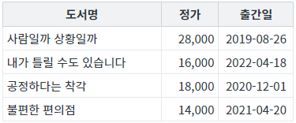
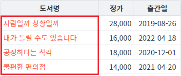
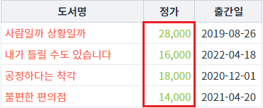
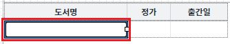
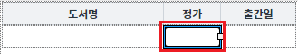
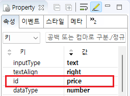

GridView의 함수 'setColumnColor' 예제입니다. 이 함수는 특정 열(컬럼)의 글자색을 지정하는 기능을 제공합니다.
바디 컬럼의 인덱스로 글자색 지정하기
바디 컬럼의 아이디로 글자색 지정하기
STEP 1. 초기 상태를 확인합니다.
화면에 출력된 GridView의 바디 컬럼의 id는 다음과 같습니다.
도서명 : book_name 정가 : price 출간일 : published_date
그림 1.브라우저(Chrome) 실행 예시

STEP 2. 바디 컬럼의 인덱스로 글자색 지정하기
버튼 열의 글자색을 'tomato'로 지정하기 - body column의 index 사용을 클릭합니다.STEP 3. 실행된 결과를 확인합니다.
GridView의 헤더명이 '도서명'인 컬럼의 글자색이 변경됩니다.
그림 2.브라우저(Chrome) 실행 예시 - GridVeiw

STEP 4. 바디 컬럼의 아이디로 글자색 지정하기
버튼 열의 글자색을 '#9ACD32'로 지정하기 - body column의 id 사용을 클릭합니다.STEP 5. 실행된 결과를 확인합니다.
GridView의 헤더명이 '정가'인 컬럼의 글자색이 변경됩니다.
그림 3.브라우저(Chrome) 실행 예시 - GridVeiw

GridView의 함수 'setColumnColor'를 이용하여 스크립트를 작성합니다. 세부 지정은 아래의 스크립트 예시에 작성되어 있습니다.
스크립트
//예제 파일에서는 스크립트 scwin.btn_exam1_onclick에 작성되어 있습니다. //GridView 'grd_exam1'의 바디 컬럼의 index가 0번째인 컬럼의 글자색을 'tomato'로 지정하기 grd_exam1.setColumnColor(0, "tomato");
그림 4.웹스퀘어5 SP5 스튜디오의 Design 탭 예시

소스 코드
<w2:gridView id="grd_exam1"> <!-- 중략 --> <w2:gBody id="gBody1"> <w2:row id="row2"> <w2:column id="book_name"></w2:column> <w2:column id="price"></w2:column> <w2:column id="published_date"></w2:column> </w2:row> </w2:gBody> </w2:gridView>
GridView의 함수 'setColumnColor'를 이용하여 스크립트를 작성합니다. 세부 지정은 아래의 스크립트 예시에 작성되어 있습니다.
스크립트
//예제 파일에서는 스크립트 scwin.btn_exam2_onclick에 작성되어 있습니다. //GridView 'grd_exam1'의 바디 컬럼의 'id'가 'price'인 컬럼의 글자색을 '#9ACD32'로 지정하기 grd_exam1.setColumnColor('price', "#9ACD32");
그림 5.웹스퀘어5 SP5 스튜디오의 Design 탭 예시

그림 6.웹스퀘어5 SP5 스튜디오의 DataList Property View(속성창) 예시

소스 코드
<w2:gridView id="grd_exam1"> <!-- 중략 --> <w2:gBody id="gBody1"> <w2:row id="row2"> <w2:column id="book_name"></w2:column> <w2:column id="price"></w2:column> <w2:column id="published_date"></w2:column> </w2:row> </w2:gBody> </w2:gridView>
setColumnColor( colIndex , color )
[웹스퀘어5 SP5 개발 가이드] GridView
링크 : https://docs1.inswave.com/sp5_user_guide/86bdcf48029b958b